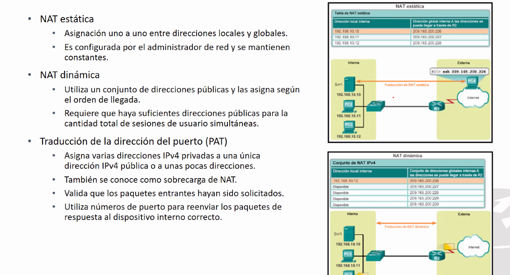

NAT: Estaticos y dinamicos:
NAT ESTATICA: CADA IP PRIVADA TIENE UNA IPPUBLICA POR FIJA
IP ESTATICA: TE PRESTA IPS PARA AHCER TRANSACCIONES Y LAS REGRESAS EN CUANTO ACABES7
EL TEC TEC TIENE DOS REDES PRIVADAS CLASE B.


Para la parte de ruteo runamico se tiene que declarar una lista de accreso

NATEO DINAMICO
PooL: Declarar direcciones que vamos a utilizar.